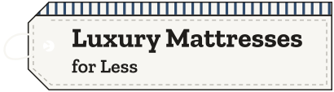

Logo sheet
Two logos, drawn for Hunter to pick one. The quilt block is the primary; the hang tag is the alternate. If the tag is picked, the price board on the site becomes a plain black panel so the tag shape does not repeat.
Primary: the quilt block, horizontal
On shiplap
On black
Primary: the quilt block, stacked
On shiplap
On black
Alternate: the hang tag
On shiplap
On black
